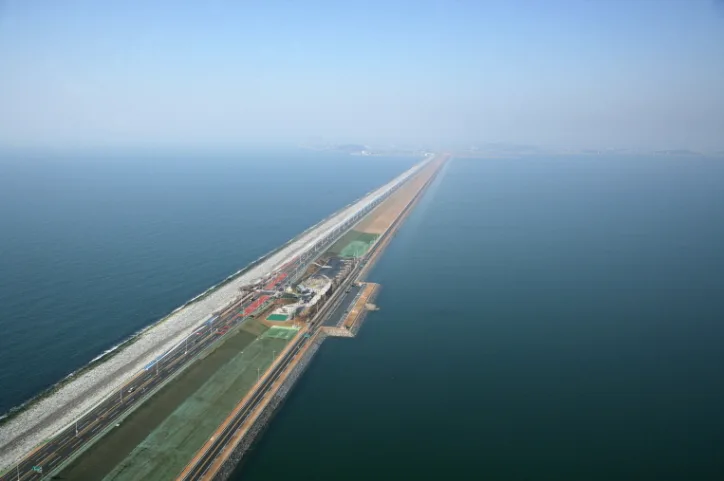
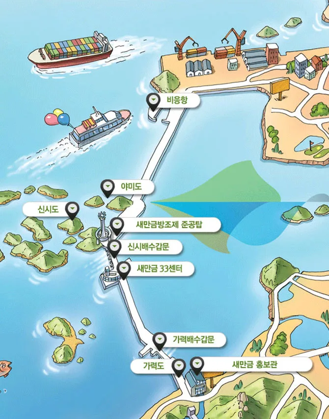
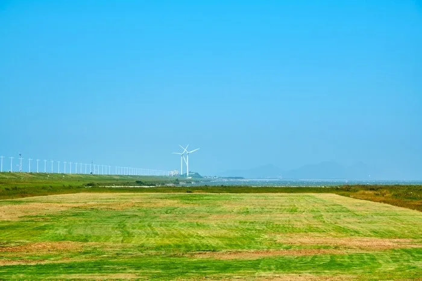
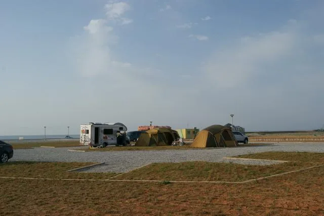

▲ 새만금 방조제. 부안 대항리에서 군산 비응도까지 33.9km가 직선으로 이어진다
도로 양옆이 모두 물인 구간을 30km 넘게 달릴 수 있는 곳은 국내에 하나뿐입니다. 새만금 방조제입니다.
왼쪽은 서해 바다, 오른쪽은 방조제가 만든 호수입니다. 그 사이를 33.9km 직선이 관통합니다. 다리도 아니고 해안도로도 아닌, 바다를 막아 만든 둑 위의 도로라는 점이 이 길의 성격을 결정합니다.
1. 19년이 걸린 둑
착공은 1991년 11월이었습니다. 준공은 2010년입니다. 19년이 걸린 이유는 공사 난도 때문만이 아니라, 갯벌 훼손을 둘러싼 환경 논쟁으로 공사가 여러 차례 중단됐기 때문입니다.

▲ 방조제 상공. 바다와 호수를 가르는 선이 수평선까지 이어진다 ⓒ 뉴스캔
완공 직후 기록에 올랐습니다. 2010년 8월 기네스 세계기록에 세계에서 가장 긴 방조제로 등재됐습니다. 그전까지 기록을 갖고 있던 것은 네덜란드의 자위더르 방조제로 32.5km였고, 새만금이 1.4km 차이로 앞섰습니다.
📍 둑의 실제 크기
방조제는 도로 폭만 보면 실감이 나지 않습니다. 바닥 폭은 평균 290m, 가장 넓은 곳은 535m입니다. 높이는 평균 36m, 최대 54m입니다. 우리가 달리는 것은 이 거대한 사다리꼴 구조물의 맨 윗면입니다.

▲ 새만금 일대 주요 지점 안내도 ⓒ 새만금개발청
2. 실제로 달려보면
이 길의 특징은 단조로움입니다. 좋은 의미로도, 나쁜 의미로도 그렇습니다. 커브가 거의 없고 신호도 없어 흐름이 끊기지 않지만, 같은 풍경이 20분 넘게 이어지면서 속도 감각이 무뎌지기 쉽습니다.

▲ 새만금 간척지의 풍력발전 설비. 이 일대는 바람이 강하다 ⓒ 대한민국 구석구석(한국관광공사)
가장 실질적인 변수는 측풍입니다. 방조제 위에는 바람을 막아줄 지형지물이 전혀 없습니다. 풍력발전 단지가 들어선 이유가 그것입니다. 바람이 강한 날 고속으로 달리면 차선 유지에 힘이 들어가고, 차고가 높은 SUV나 캠핑 트레일러 견인 차량은 영향이 더 큽니다.
중간에 끊어 갈 지점을 정해두는 편이 좋습니다. 방조제 중간에는 정차·전망 구역이 마련돼 있고, 여기서 한 번 내려 바다 쪽과 호수 쪽을 비교해 보면 이 구조물의 성격이 한눈에 들어옵니다. 색과 물결이 양쪽에서 완전히 다릅니다.

▲ 새만금 일대 오토캠핑 시설. 방조제 드라이브와 묶어 1박 코스로 쓰인다 ⓒ 대한민국 구석구석(한국관광공사)
1박 코스로도 구성됩니다. 방조제 양 끝인 군산과 부안 모두 숙박과 캠핑 인프라가 있어, 방조제를 왕복하고 한쪽에서 묵는 구성이 일반적입니다. 낙조 시간대에 서쪽을 향해 달리면 정면으로 해가 떨어집니다.
| 항목 | 내용 |
|---|---|
| 측풍 | 풍속 강한 날 감속, 양손 파지 |
| 졸음 | 장직선 구간 — 중간 정차 지점 미리 지정 |
| 연료 | 방조제 구간 내 주유소 없음 — 진입 전 급유 |
| 시간대 | 낙조는 군산 방향(서향) 주행 시 정면 |
| 이륜차 | 측풍 영향 큼 — 강풍 시 진입 자제 |
정리하면 이렇습니다. 새만금 방조제는 코너링이나 경관 변화를 즐기는 길이 아닙니다. 국내 어디에도 없는 스케일을 체감하는 길입니다. 바람과 졸음, 두 가지만 관리하면 됩니다.